School
Bienvenue à l'école. Deux façons d'apprendre : lire, ou regarder. Choisis ton parcours.
Cours écrits
Cours vidéo
Ressources Trading
Toutes les notions de base dont tu as besoin avant de trader. Consulte cette page comme un dictionnaire — reviens-y chaque fois qu'un terme t'échappe.
Vocabulaire essentiel
Voici un rappel de toutes les notions de base en trading. Imprime-le et garde-le à tes côtés lors de ton évolution en trading !
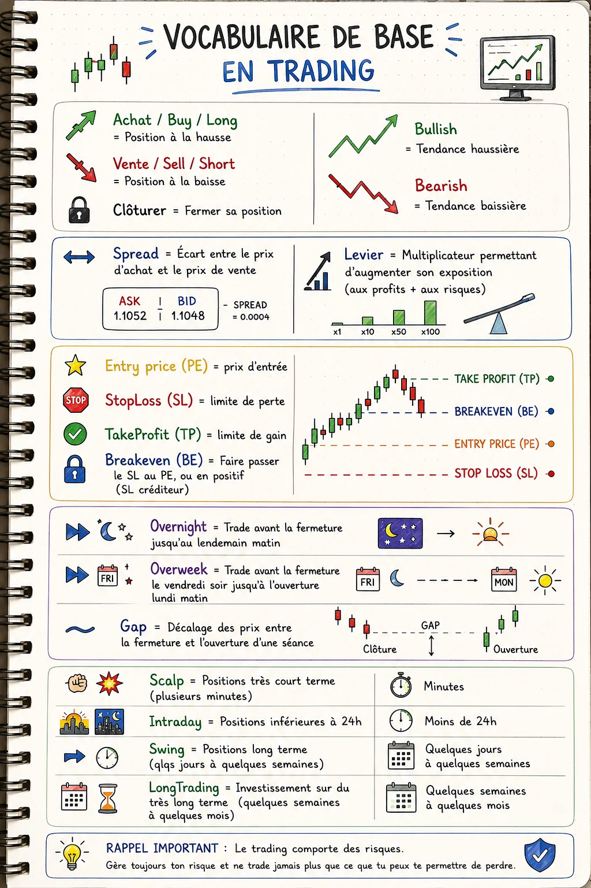
Les types d'ordres
Une notion qu'on mélange souvent. Voici la différence entre chaque ordre. Imprime-le et garde-le à tes côtés lors de ton évolution en trading !
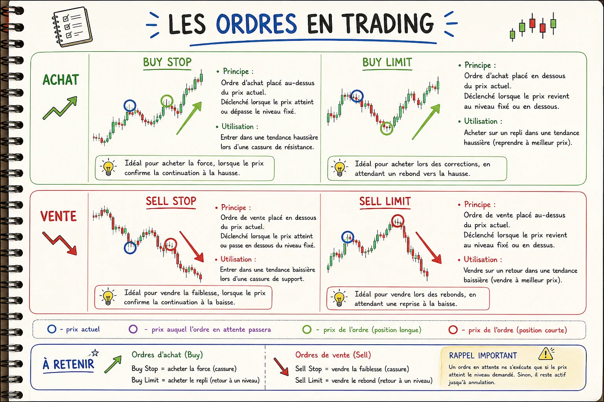
Les sessions de trading
Le marché tourne 24h/24 — mais il n'est pas actif tout le temps.
| Session | Heure Paris (CET) | Caractéristiques |
|---|---|---|
| Tokyo | 02h00 – 11h00 | Faible volatilité, marché calme |
| Londres | 09h00 – 18h00 | Forte volatilité, très actif |
| New York | 14h00 – 23h00 | Forte volatilité, annonces éco importantes |
| Chevauchement Londres / NY | 14h00 – 18h00 | La période la plus active de la journée |
Les timeframes
Un timeframe = la durée que représente chaque bougie sur ton graphique.
| Timeframe | Chaque bougie = |
|---|---|
| D1 (Daily) | 1 jour |
| H4 | 4 heures |
| H1 | 1 heure |
| M15 | 15 minutes |
| M5 | 5 minutes |
| M1 | 1 minute |
L'approche multi-timeframe
On commence toujours par le haut pour comprendre où on est, puis on zoome pour trouver l'entrée.
Du général au particulier.
Les bougies & lecture du marché
Chaque bougie raconte l'histoire d'une période : cette période est définie par son timeframe, elle sera le résultat de cette temporalité sur le marché.
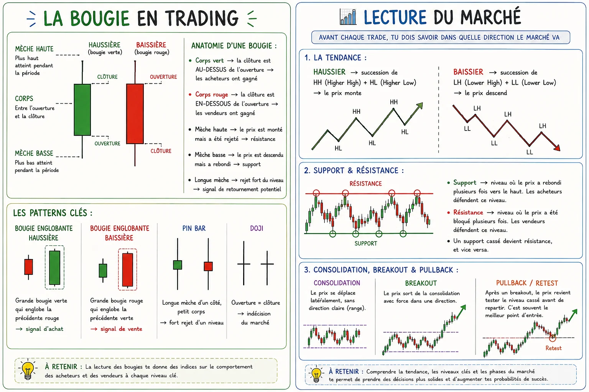
Les sommets et les creux
- HH (Higher High) → Sommet plus haut : le nouveau sommet dépasse le sommet précédent.
- HL (Higher Low) → Creux plus haut : le nouveau creux reste au-dessus du creux précédent.
- LH (Lower High) → Sommet plus bas : le nouveau sommet reste en dessous du sommet précédent.
- LL (Lower Low) → Creux plus bas : le nouveau creux descend sous le creux précédent.
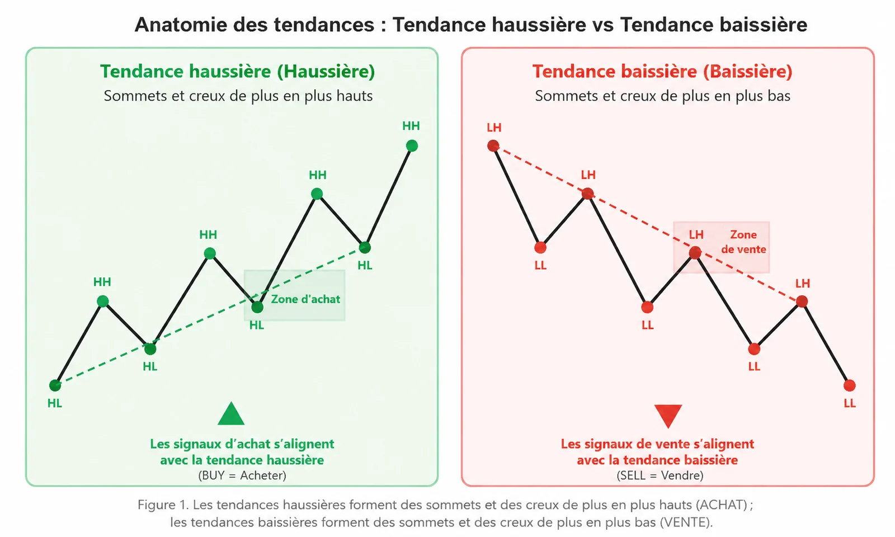
Fibonacci
Outil de trading qui sert à identifier les zones potentielles de retracement et d'objectif de prix, en s'appuyant sur la suite de Fibonacci et le nombre d'or.
Le Fibonacci fonctionne comme un immeuble : chaque zone correspond à un étage, séparés entre eux.
Le prix fonctionne comme une balle rebondissante : elle rebondit de sol en plafond et prend de la force jusqu'à casser ces étages pour passer au suivant.
Les zones ont une fonction différente selon leur solidité. Plus l'étage est haut (loin du point 0), plus l'étage est solide, et donc la balle rebondira.
- La zone dorée marche comme un aimant : elle attire et repousse le prix.
- La zone de retournement représente un des étages les plus solides et les plus importants.
- La zone de retracement est une zone dans laquelle le prix réagit, souvent intéressante pour se placer ou identifier des étages.
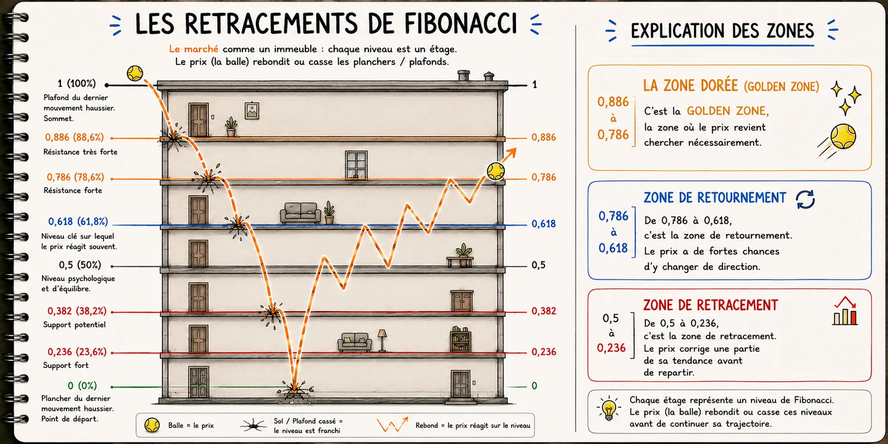
Comment placer le Fibonacci ?
Le Fibonacci est comme une histoire : elle se lit toujours du début à la fin.
- Si le mouvement est HAUSSIER, on place de bas en haut.
- Si le mouvement est BAISSIER, on place de haut en bas.
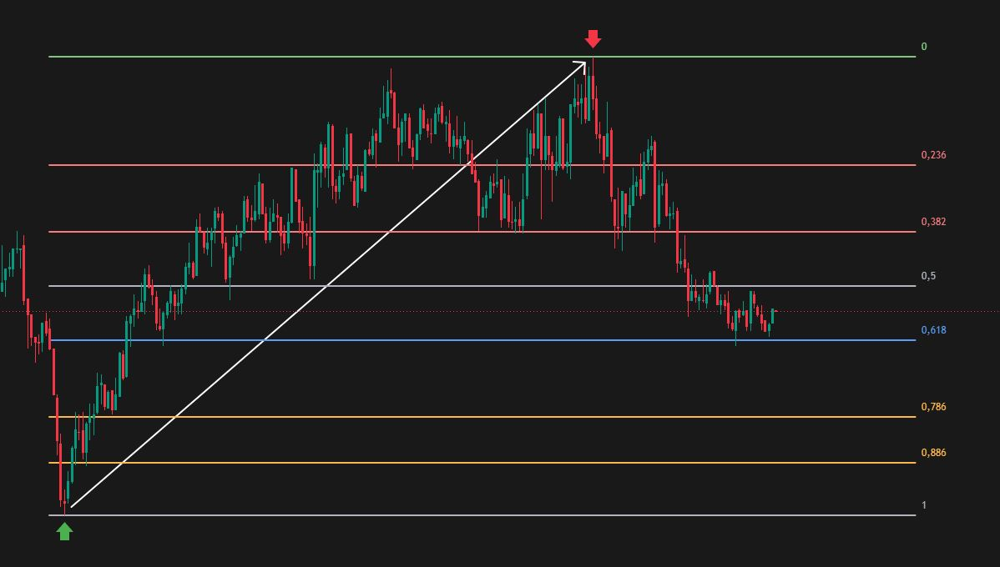
global est haussier : on applique la logique du dessus, et cela permet de savoir où nous sommes dans le marché et où il va en grosse unité de temps." loading="lazy" data-zoom>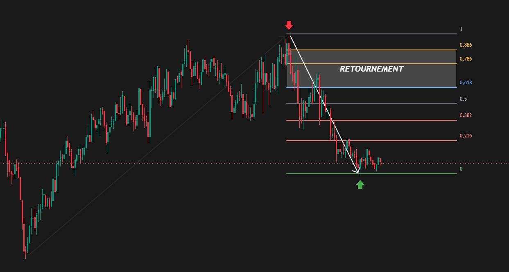
petit mouvement baissier : on applique la même logique, et cela permet de savoir où le prix est susceptible d'aller à la hausse avant de repartir à la baisse de notre mouvement global." loading="lazy" data-zoom>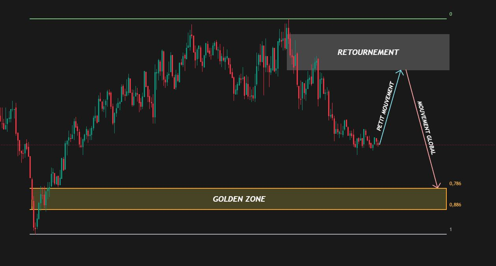
Le Fibonacci peut autant donner le contexte du présent grâce au passé, mais aussi déterminer un mouvement futur grâce au présent.
Réglage Fibonacci
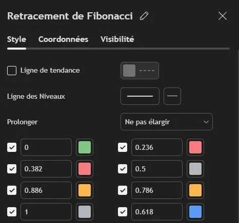
La trendline
Outil de trading qui sert à identifier la direction du marché ainsi que les zones de support ou de résistance, en reliant plusieurs sommets ou plusieurs creux par une droite.
- La trendline sera toujours placée sous le prix dans une tendance haussière.
- La trendline sera toujours placée au-dessus du prix dans une tendance baissière.
Car elle permet d'identifier les retournements : si le prix vient à la casser, cela nous indique la plupart du temps un retournement de marché.
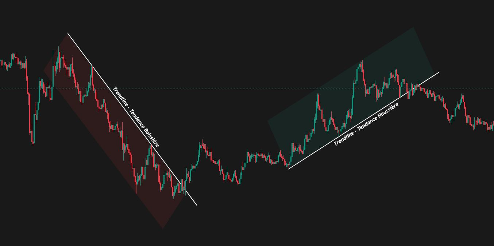
Une trendline a plusieurs règles pour être validée
- Avoir minimum 3 points de touche.
- Ne pas casser les corps de bougie (les mèches sont autorisées).
- Considérer comme retournement uniquement la bougie ayant démarré et clôturé au-dessus de cette trendline.
Les figures chartistes
Configurations graphiques qui servent à anticiper une continuation ou un retournement de tendance, en se basant sur les formes créées par les mouvements du prix.
DOUBLE TOP (M) et DOUBLE BOTTOM (W) sont des figures de retournement : elles apparaissent lorsque le marché change de force.
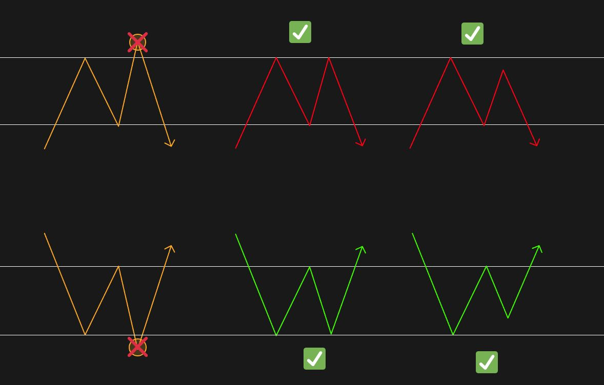
Le BOS
Le BOS confirme un changement de structure. Il se produit quand le prix casse le dernier point de structure qui définissait la tendance.
- Avant la cassure : la tendance est haussière.
- Après la cassure : le prix clôture sous le niveau, change de tendance → BOS validé.
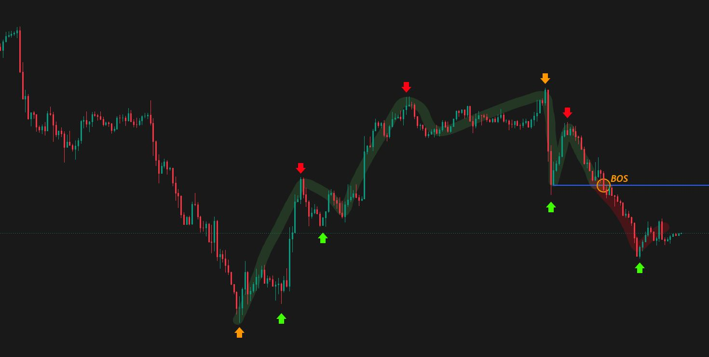
Les annonces économiques
Certains événements font bouger le marché très violemment — il faut les connaître.
| Couleur | Impact | Quoi faire |
|---|---|---|
| Rouge | Fort | Ne surtout pas trader pendant cette période, ni avant ni juste après |
| Orange | Moyen | Reste prudent |
| Jaune | Faible | Peu d'influence |
Réglage recommandé pour le XAU/USD
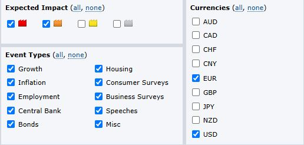
Les plateformes — MT5 & TradingView
Deux outils, deux rôles différents.
MetaTrader 5 (MT5) — placer ses ordres
C'est ici que tu ouvres et gères tes positions.
Installation
- iOS → App Store → MetaTrader 5
- Android → Google Play → MetaTrader 5
- Ouvre un compte démo chez ton broker (Vantage)
Passer un ordre
- Bouton + → Nouvel ordre
- Sélectionne XAU/USD → Volume : 0.01 lot
- Entre ton Stop Loss (obligatoire)
- Entre ton Take Profit
- Appuie sur ACHETER (vert) ou VENDRE (rouge)
TradingView — analyser les graphiques
Plateforme d'analyse graphique. Plus puissante que MT5 pour tracer tes outils.
- Accès gratuit sur tradingview.com
- Cherche XAU/USD ou GOLD
- Utilise les layouts multi-fenêtres pour voir D1 + H1 + M15 + M5 simultanément
- Crée des alertes de prix (Alt+A)
- Raccourcis timeframe : Alt+1/2/3/4/5
Outils pratiques
Les ressources à utiliser avant et après chaque trade.
Calculateur de lot
Avant chaque trade, calcule la taille de ta position pour ne jamais risquer plus de 1 % de ton capital.
Calculateur MyFXBook ↗| Étape | Action |
|---|---|
| 1 | Définis ton capital total |
| 2 | Calcule 1 % = ton risque max en euros |
| 3 | Mesure la distance SL en pips |
| 4 | Le calculateur te donne le lot exact |
Pour plus de bases…
Tu veux des vidéos qui t'expliquent des notions précises qui ne sont pas évoquées ici :
- Rends-toi sur JIFULIVE
- Dans le menu à droite, clique sur « Educators »
- Cherche « Bastian » dans la barre de recherche puis clique sur son profil
- Va dans « Cours » puis clique sur « ▷ » du pack Starter
VVS — La Stratégie
Structure de marché
C'est ici que tout commence.
Étape 1 : déterminer les HH (plus haut / sommet) et LL (plus bas / creux)
Sur ton graphique :
1. Repère le HH général (sommet le plus haut) et le LL général (creux le plus bas) du mouvement global :
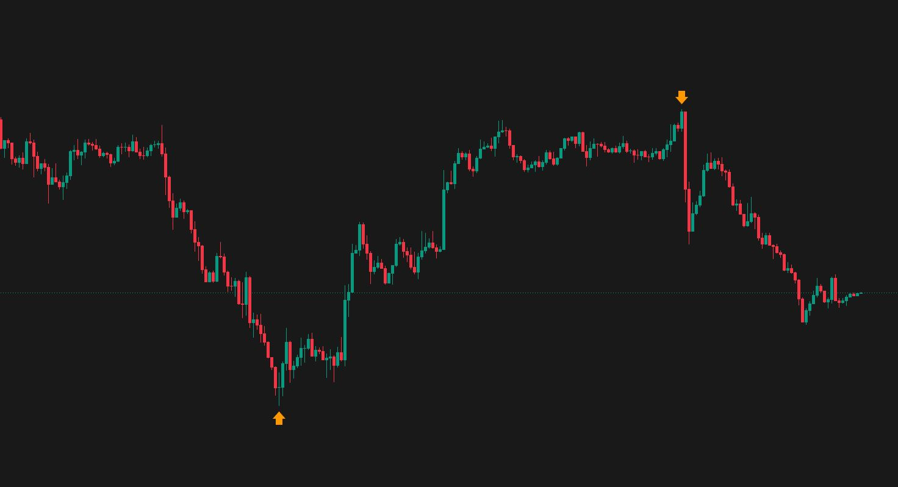
2. Puis identifie tous les HH et LL intermédiaires à partir de ton premier point. Cela va te permettre de connaître la tendance.
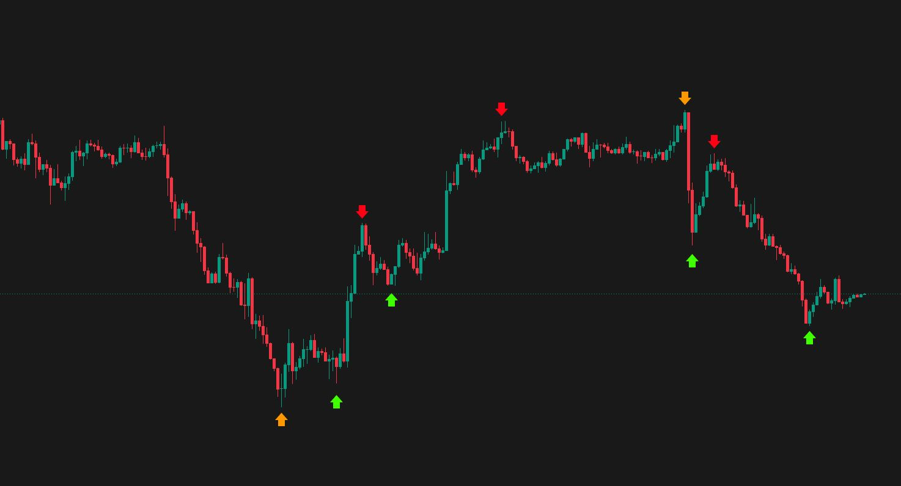
Fibonacci
Deux Fibonacci, deux informations différentes.
Étape 3 : Fibonacci global — où on est ?
Placé du HH général au LL général. Cela permet de comprendre si, à ce moment précis, nous sommes dans une zone de retracement, de retournement ou dans la golden zone.
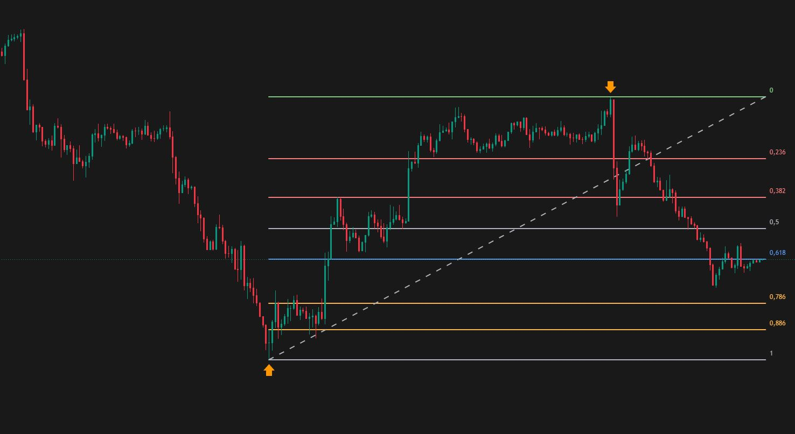
retournement." loading="lazy" data-zoom>Étape 4 : Fibonacci ciblé — où on va ?
Placé sur le dernier HH et LL en cours : ici on utilise le mouvement actuel pour déterminer l'objectif futur !
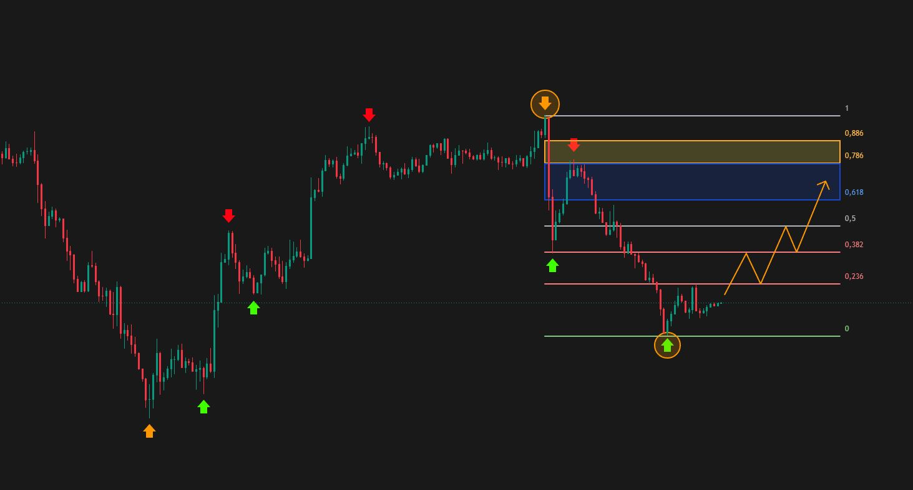
HH et pas le dernier (en rouge) ? Parce qu'il n'est pas représentatif du mouvement : il ne s'agit pas d'un HH mais d'un LH (voir la différence à « Étape 1 »), un plus haut dû à un retracement." loading="lazy" data-zoom>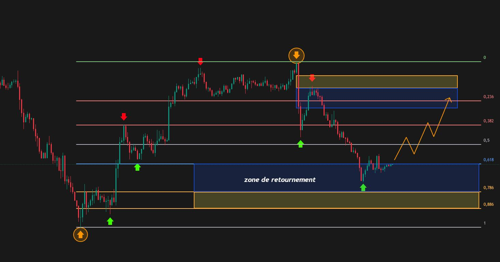
Cassure & entrée
La 3e confirmation. On attend un signal clair avant d'entrer.
Étape 5 : cassures d'éléments graphiques
Signal 1 — Cassure de trendline
- Trace la trendline sur les sommets (baissier) ou les creux (haussier).
- Attends une bougie de clôture confirmée au-delà de la ligne (BOTrendline).
- Pour que la trendline soit validée, elle doit obligatoirement avoir 3 points de touche.
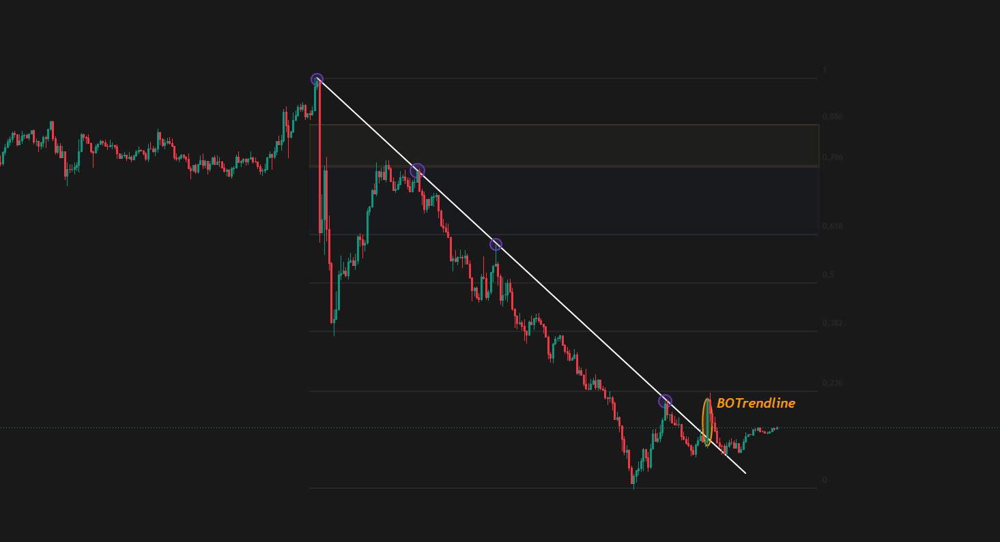
Signal 2 — Double Top / Double Bottom
- Double Bottom (W) → signal haussier. Entre quand le prix casse le dernier LH.
- Double Top (M) → signal baissier. Entre quand le prix casse le dernier HL.
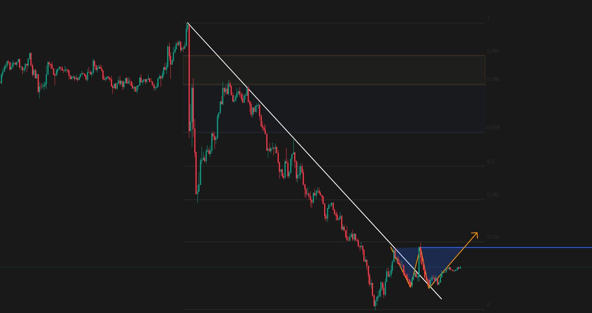
Signal 3 — BOS du dernier HH ou LL
Le prix casse la structure locale (HL ou LH) pour confirmer le changement de direction. Comme dans le screen, tant que cette clôture n'a pas eu lieu, aucune position ne doit être prise. Notre analyse est terminée, il n'y a plus qu'à attendre le bon moment !
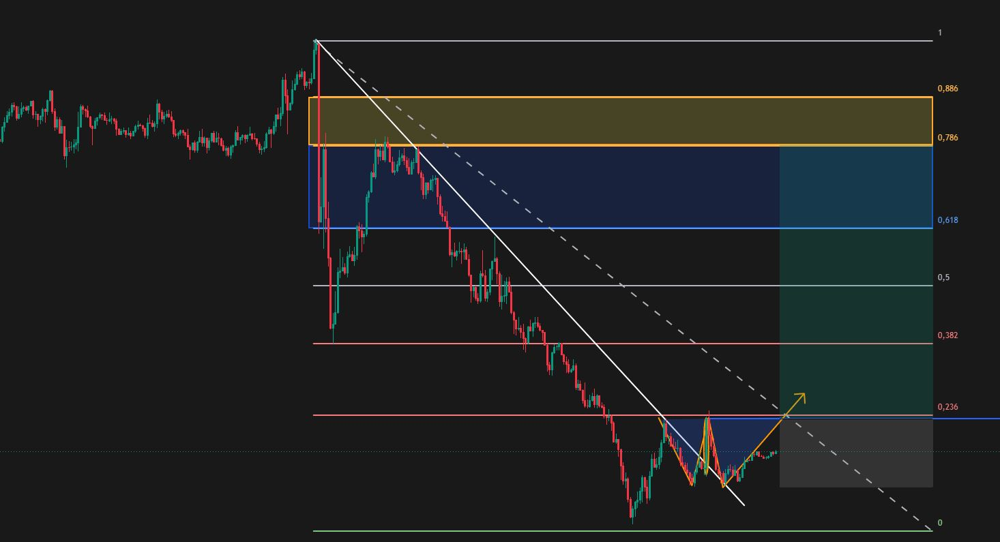
Gestion du trade
Une fois les 3 confirmations validées, voici comment placer ton ordre.
| Élément | Placement |
|---|---|
| Prix d'entrée (PE) | Au niveau du BOS cassé |
| Stop Loss (SL) | Au HH ou LL du mouvement concerné |
| Take Profit (TP) | Au 0.618 du Fibonacci global |
Checklist VVS — avant chaque trade
Psychologie & Money Management
La vérité sur le trading
Le trading n'est pas une garantie, il contient une part de risque. C'est certes de l'argent qui peut être rapide, mais pas facile.
Les chiffres qui font mal
Pourquoi ils perdent ?
Parce qu'ils n'ont pas la bonne stratégie ? → NON
Le trading est rentable à 30 % grâce à la stratégie, et à 70 % grâce à la psychologie et au money management.
→ Parce qu'ils ne gèrent pas leurs émotions et leur capital.
Exemple :
- 5 % de 100 € = 5 €
- 5 % de 100 000 € = 5 000 €
Mais risquerais-tu 50 % de ton capital s'il était de 100 000 € ? → NON.
Les attentes réalistes
- Viser 3 à 5 % par mois de manière régulière est déjà une excellente performance.
- Celui qui te promet 50 % par mois te ment, ou prend des risques inconsidérés qui vont brûler son compte.
- La rentabilité se construit sur des centaines de trades, pas sur 3 trades gagnants.
Il n'existe pas de stratégie magique
VVS fonctionne. Mais seulement si tu respectes les règles à chaque trade, sans exception. Le problème ne sera jamais la stratégie — il sera toujours toi.
Car si elle a fonctionné pour quelqu'un, pourquoi pas pour toi ?
Le syndrome de l'objet brillant
L'herbe n'est pas plus verte ailleurs… Changer de stratégie toutes les 2 semaines parce qu'on a vu une vidéo YouTube est la première cause d'échec chez les débutants.
La démo n'est pas une option
Trader en démo n'est pas pour les débutants. C'est pour tout le monde. Les pros testent toujours en démo avant de changer quoi que ce soit. Minimum 1 à 2 mois en démo avant de mettre de l'argent réel.
Psychologie du trader
Les émotions qui tuent un compte
Comment rester neutre
- Accepte avant d'entrer que ce trade peut être perdant. C'est normal.
- Un trade perdu mais bien géré = un bon trade. Un trade gagné par chance sans analyse = un mauvais trade.
- Ne regarde pas ton P&L en temps réel. Place ton ordre, ferme MT5.
- Juge ta performance sur 20, 50, 100 trades — pas sur le dernier en date.
Pourquoi est-ce si dur ?
Le cerveau n'a pas évolué pour le trading. Il a évolué pour survivre dans la nature. Pendant des milliers d'années, réagir rapidement à un danger augmentait les chances de survie ; or en trading, cette réaction devient souvent un handicap.
Ton cerveau
- Une petite perte est perçue comme une menace.Amygdale
- Un gain déclenche une envie de récompense.Dopamine
- L'incertitude crée du stress.Cortex préfrontal
Les marchés demandent l'inverse
- Accepter les pertes.
- Attendre patiemment.
- Suivre des probabilités plutôt que ses émotions.
- Être discipliné, même quand cela est inconfortable.
Tu dois redéfinir les codes de ton cerveau, et je vais te donner 3 éléments clés :
Redéfinis
Règles de discipline
Ces règles ne sont pas des suggestions. Ce sont des lois.
Money management
La règle du 1 %
Ne risque jamais plus de 1 % de ton capital total sur un seul trade.
| Capital | Risque max par trade |
|---|---|
| 500 € | 5 € |
| 1 000 € | 10 € |
| 2 000 € | 20 € |
| 5 000 € | 50 € |
C'est cette règle qui te permet de survivre à une longue série de pertes et de rester dans le jeu.
L'impact des pertes enchaînées
À 1 % de risque par trade, même 10 pertes consécutives ne te brûlent pas — tu perds environ 10 % du capital. C'est récupérable. À 10 % de risque par trade, 5 pertes consécutives te coûtent la moitié de ton compte.
Le ratio Risk/Reward
C'est la notion clé de ta rentabilité : ton ratio dépend de ton Risk/Reward → cas concret.
Stats sur 10 trades : les cases vertes sont les TP, les rouges les SL.
• donc 2 (TP) × 5 = 10 %
• 8 SL à −1 % = −8 %
= 2 % → rentable ✓
Avec un winrate de seulement 20 %, un ratio 1:5 constant est rentable sur le long terme.
Calcul de la taille de position
- Définis ton capital total
- Calcule 1 % = ton risque max en euros
- Mesure la distance entre ton PE et ton SL en pips
- Utilise MyFXBook pour obtenir la taille de lot exacte
La routine du trader
Le trading rentable n'est pas une question de chance. C'est une question de discipline répétée.
Plan hebdomadaire
| Moment | Durée | Action |
|---|---|---|
| Matin | 10 min | Calendrier éco + XAU/USD D1 → tendance du jour |
| Midi ou soir | 15 min | Cherche une entrée si tendance confirmée |
| Après entrée | 2 min | Vérifie SL et TP → ferme MT5 |
| Vendredi 21h | 5 min | Ferme TOUTES les positions |
| 1× par semaine | 20 min | Bilan journal : qu'est-ce qui a marché / raté |
| Week-end | 0 trade | Repose-toi et apprends |
Le journal de trading
C'est l'outil qui accélère le plus la progression. Note pour chaque trade :
- Date, sens (Buy/Sell), PE, SL, TP
- Résultat en euros et en pips
- Les 3 confirmations VVS étaient-elles présentes ?
- Ton ressenti avant, pendant, après
- Ce que tu aurais pu faire différemment
Celui qui ne tient pas de journal répète indéfiniment les mêmes erreurs.